道具 & 卡片
英文名、價錢、功績點數值來自 SydMontague 資料表（遊戲內部道具 ID 次序）；中文名、日文名、中文效果、主要取得地方來自巴哈姆特道具一覽（已轉做港譯數碼暴龍名同地區名）。⚠️ 中日名係本站按「次序＋價錢」對齊兩份清單；巴哈姆特冇列嘅 6 件（電子指環、月之鏡等隱藏道具）中文名由本站翻譯。分類係本站按道具 ID 範圍分。圖示來自 Grindosaur。
道具一覽
| 名稱 | 分類 | 說明 | 價錢 | 功績點 | 取得地方 | |
|---|---|---|---|---|---|---|
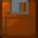 | 回復磁片 sm.recovery｜回復フロッピー | 回復磁片 | 回復【HP 500】點 | 100 | — | 道具商店 |
| 中回復磁片 med.recovery｜中回復フロッピー | 回復磁片 | 回復【HP 1500】點 | 500 | — | 道具商店 | |
| 大回復磁片 lrg.recovery｜大回復フロッピー | 回復磁片 | 回復【HP 5000】點 | 1000 | — | 道具商店 | |
| 超回復磁片 sup.recovery｜超回復フロッピー | 回復磁片 | 回復【HP 9999】點 | 2500 | 20 | 道具商店 | |
| ＭＰ磁片 MP Floppy｜ＭＰフロッピー | 回復磁片 | 回復【MP 500】點 | 300 | — | 道具商店 | |
| 中ＭＰ磁片 Medium MP｜中ＭＰフロッピー | 回復磁片 | 回復【MP 1500】點 | 800 | — | 道具商店 | |
| 大ＭＰ磁片 Large MP｜大ＭＰフロッピー | 回復磁片 | 回復【MP 5000】點 | 2000 | — | 道具商店 | |
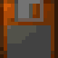 | 雙重磁片 Double flop｜ダブルフロッピー | 回復磁片 | 回復【HP+MP 1500】點 | 1500 | — | 道具商店 |
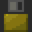 | 各樣磁片 Various｜色々フロッピー | 回復磁片 | 治療異常狀態 | 300 | — | 道具商店 |
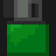 | 萬能磁片 Omnipotent｜万能フロッピー | 回復磁片 | 回復【HP+MP 1500】點．治療異常狀態 | 2000 | — | 道具商店 |
| 對變化磁片 Protection｜対変化フロッピー | 回復磁片 | 預防進入異常狀態 | 1200 | — | 道具商店 | |
| 再生磁片 Restore｜再生フロッピー | 回復磁片 | 治療瀕死狀態．回復HP最大值的一半 | 4000 | — | 道具商店 | |
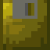 | 超再生磁片 Sup.restore｜超再生フロッピー | 回復磁片 | 回復【HP 9999】點．治療瀕死狀態 | 9500 | 100 | 道具商店 |
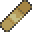 | 藥貼布 Bandage｜ばんそうこう | 回復磁片 | 治療受傷狀態．20%機率治療疾病狀態 | 200 | — | 人馬醫院 |
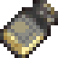 | 藥物 Medicine｜薬 | 回復磁片 | 治療受傷．疾病狀態 | 1000 | — | 人馬醫院 |
| 攻擊插件 Off. Disk｜攻撃プラグイン | 能力插件 | 提升 20 點攻擊 | 500 | — | 道具商店 | |
| 防禦插件 Def. Disk｜防御プラグイン | 能力插件 | 提升 20 點防禦 | 500 | — | 道具商店 | |
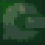 | 高速插件 Hispeed dsk｜高速プラグイン | 能力插件 | 提升 20 點敏捷 | 500 | — | 道具商店；高力獸（掉落） |
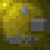 | 萬能插件 Omni Disk｜万能プラグイン | 能力插件 | 提升 20 點攻擊＆防禦＆敏捷 | 3000 | — | 秘密道具商店 |
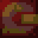 | 攻擊插件Ｓ S.Off.disk｜攻撃プラグインＳ | 能力插件 | 提升 50 點攻擊 | 4000 | — | 秘密道具商店 |
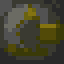 | 防禦插件Ｓ S.Def.disk｜防御プラグインＳ | 能力插件 | 提升 50 點防禦 | 4000 | — | 秘密道具商店；刀劍獸（１００％掉落） |
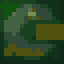 | 高速插件Ｓ S.speed.disk｜高速プラグインＳ | 能力插件 | 提升 50 點敏捷 | 4000 | — | 秘密道具商店 |
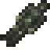 | 自動駕駛員 Auto Pilot｜オートパイロット | 能力插件 | 傳送至「起始之城．北」 | 300 | — | 道具商店 |
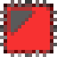 | 攻擊晶片 Off. Chip｜攻撃チップ | 能力晶片 | 增加 50 點攻擊 | 9999 | 800 | 各處 |
| 防禦晶片 Def. Chip｜防御チップ | 能力晶片 | 增加 50 點防禦 | 9999 | 800 | 各處 | |
| 聰明晶片 Brain Chip｜かしこさチップ | 能力晶片 | 增加 50 點智力 | 9999 | 800 | 各處 | |
| 敏捷晶片 Quick Chip｜すばやさチップ | 能力晶片 | 增加 50 點敏捷 | 9999 | 800 | 各處 | |
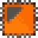 | ＨＰ晶片 HP Chip｜ＨＰチップ | 能力晶片 | 增加 500 點HP | 9999 | 800 | 各處 |
| ＭＰ晶片 MP Chip｜ＭＰチップ | 能力晶片 | 增加 500 點MP | 9999 | 800 | 各處 | |
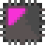 | 惡魔晶片Ａ DV Chip A｜デビルチップＡ | 能力晶片 | 增加 100 點攻擊＆智力，減少壽命 24 小時；有 10% 的機率使訓練師等級下降 | 5000 | — | 秘密道具商店 |
| 惡魔晶片Ｄ DV Chip D｜デビルチップＤ | 能力晶片 | 增加 100 點防禦＆敏捷，減少壽命 24 小時；有 10% 的機率使訓練師等級下降 | 5000 | — | 秘密道具商店 | |
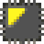 | 惡魔晶片Ｅ DV Chip E｜デビルチップＥ | 能力晶片 | 增加 1000 點HP＆MP，減少壽命 24 小時；有 10% 的機率使訓練師等級下降 | 5000 | — | 秘密道具商店 |
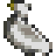 | 攜帶式廁所 Port. potty｜けいたいトイレ | 輔助道具 | 解除便意 | 300 | — | 道具商店 |
| 訓練手冊 Trn. manual｜トレーマニュアル | 輔助道具 | 訓練的效果1.1倍 | 9999 | — | 道具商店 | |
| 安眠枕頭 Rest pillow｜安眠まくら | 輔助道具 | 睡眠時的回復効果1.2倍 | 1000 | — | 秘密道具商店 | |
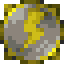 | 避敵護符 Enemy repel｜敵よけお守り | 輔助道具 | 減少開始戰鬥時的敵人參與數量 | 5000 | — | 秘密道具商店 |
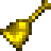 | 聚敵訊號 Enemy bell｜敵よせシグナル | 輔助道具 | 增加開始戰鬥時的敵人參與數量 | 5000 | — | 秘密道具商店 |
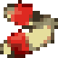 | 健康涼鞋 Health shoe｜健康サンダル | 輔助道具 | 緩步移動時，每1分鐘回復【HP+MP 5】點 | 2000 | — | 秘密道具商店 |
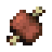 | 肉 Meat｜肉 | 食物 | 飽足度+12．體重+1 | 50 | — | 肉田；道具商店 |
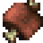 | 巨大肉 Giant Meat｜巨大肉 | 食物 | 飽足度+24．體重+2 | 500 | — | 肉田；卡片市場 |
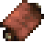 | 極品肉 Sirloin｜極上肉 | 食物 | 飽足度+35．體重+3．心情值+1.5、疲勞值-5 | 1500 | — | 肉田 |
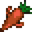 | 挑戰胡蘿蔔 Supercarrot｜挑戦ニンジン | 食物 | 満腹度+10．体重-2；6小時內，MP＆攻撃＆智力的訓練効果1.2倍 | 500 | — | 肉田；紅鼻屎獸（掉落） |
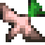 | 櫻花鳥蘿蔔 Hawk radish｜サクラ鳥大根 | 食物 | 飽足度+15．體重+3；6小時內，HP＆防御＆敏捷的訓練効果1.2倍 | 500 | — | 肉田；祖利獸（掉落） |
| 薺薺菜 Spiny green｜ペンペンペン草 | 食物 | 飽足度+9．體重+1．疲勞值-50 | 1000 | — | 怪蛙濕地（１） | |
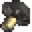 | 數碼香菇 Digimushrm｜デジタケ | 食物 | 飽足度+12．體重+1 | 100 | — | 各處 |
| 除雪香菇 Ice mushrm｜雪割りキノコ | 食物 | 飽足度+19．體重+2．教養值+50 | 1000 | — | 冰結凍土 | |
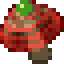 | 豪華香菇 Deluxmushrm｜デラックスキノコ | 食物 | 飽足度+38．體重+4；最大HP．最大MP+100；所有其他數值+10 | 5000 | — | 各處 |
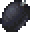 | 數碼松果 Digipine｜デジぼっくり | 食物 | 飽足度+22．體重+2；6小時內，所有能力的訓練効果1.2倍 | 1000 | — | 朦朧群樹 |
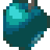 | 藍蘋果 Blue apple｜ブルーリンゴ | 食物 | 飽足度+30．體重+3．心情值+25 | 1000 | — | 堅定森林 |
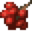 | 櫻桃樹果 Red Berry｜アセラロ | 食物 | 飽足度+25．體重+2；心情值+10．教養值+20．疲勞值-20 | 1000 | — | 恐龍古代秘境．時靜域 |
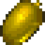 | 黃金橡實 Gold Acorn｜黄金ドングリ | 食物 | 飽足度+40．體重+4 | 8000 | — | 甲蟲島（僅後期版） |
| 重量級草莓 Big Berry｜ヘビーいちご | 食物 | 飽足度+100．體重+10 | 1000 | — | 守望山山路 | |
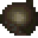 | 天然甘栗 Sweet Nut｜天然あまぐり | 食物 | 飽足度+20．體重+2．回復所有HP | 1000 | — | 齒輪莽原（僅後期版） |
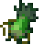 | 蔓陀蘿根 Super veggy｜モンドレイク | 食物 | 飽足度+16．體重+2．回復所有MP | 1000 | — | 超載幽谷．墓地 |
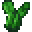 | 食用仙人掌 Pricklypear｜食用サボテン | 食物 | 飽足度+33．體重-5 | 1000 | — | 齒輪莽原（僅初期版）；偉大峽谷上層 |
| 橘子香蕉 Orange bana｜オレンジバナナ | 食物 | 飽足度+24．體重+2．HP＆MP回復1000點 | 1000 | — | 熱帶雨林 | |
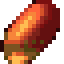 | 剛力草的果實 Power fruit｜ごうりき草の実 | 食物 | 飽足度+20．體重+2．攻撃+20 | 5000 | — | 朱紅獸（掉落） |
| 健壯草的果實 Power Ice｜じょうぶ草の実 | 食物 | 飽足度+20．體重+2．防御+20 | 5000 | — | 齒輪莽原（僅後期版）；岩石獸（掉落） | |
| 駿足草的果實 Speed Leaf｜はやあし草の実 | 食物 | 飽足度+20．體重+2．敏捷+20 | 5000 | — | 冰封惡魔獸（掉落） | |
| 博識草的果實 Sage Fruit｜ものしり草の実 | 食物 | 飽足度+20．體重+2．智力+20 | 5000 | — | 冰結凍土；炎天使獸（掉落） | |
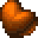 | 茁壯草的果實 Muscle Yam｜もりもり草の実 | 食物 | 飽足度+20．體重+2．最大HP+200 | 5000 | — | 怪蛙濕地（１）；森林貝殼獸（掉落） |
| 安寧草的果實 Calm berry｜やすらぎ草の実 | 食物 | 飽足度+20．體重+2．最大MP+200 | 5000 | — | 朦朧群樹；藍色火焰獸（掉落） | |
| 數碼雜魚 Digianchovy｜デジジャコ | 魚 | 飽足度+8．體重+1；「冰結凍土」毛人獸所需的道具 | 50 | — | 釣魚 | |
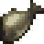 | 數碼鯽魚 Digisnapper｜デジブナ | 魚 | 飽足度+12．體重+1 | 100 | — | 釣魚 |
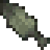 | 數碼鱒魚 DigiTrout｜デジマス | 魚 | 飽足度+22．體重+2 | 300 | — | 釣魚 |
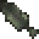 | 數碼黑鱸魚 Black trout｜ブラックデジマス | 魚 | 飽足度+27．體重-2；最大HP・最大MP+10、所有其他數值+1；「冰結凍土」毛人獸所需的道具 | 1000 | — | 釣魚 |
| 數碼鯰魚 Digicatfish｜デジナマズ | 魚 | 飽足度+49．體重+5 | 2000 | — | 釣魚 | |
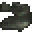 | 數碼斑魚 Digiseabass｜デジカムル | 魚 | 飽足度+35．體重+4．回復所有HP＆MP；壽命+3小時、20%機率生病 | 8000 | — | 釣魚；巨音鄉（與怪蛙將軍獸見面前與怪蛙獸對話） |
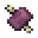 | 腐爛掉的肉 Moldy Meat｜くさった肉 | 食物 | 飽足度+30．體重+2．一定生病 | 50 | — | 自動販賣機（恐龍古代秘境．時靜域） |
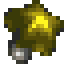 | 試手氣香菇 Happymushrm｜運だめしキノコ | 食物 | 飽足度+15．體重+1；心情值+15．疲勞值-30、30%機率生病 | 1000 | — | 各處 |
| 鎖鏈蜜瓜 Chain melon｜クサリカケメロン | 食物 | 飽足度+50．體重+3．心情值+25；疲勞值-50．壽命+20小時．5%機率生病 | 5000 | — | 齒輪莽原；攻略完裏次元後與公公獸對話 | |
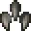 | 灰色利爪 Grey Claws｜灰色の爪 | 進化道具 | 進化為：暴龍獸 | 5000 | — | 於ダイノカップ獲得優勝 |
| 火炎的碎片 Fireball｜炎のかけら | 進化道具 | 進化為：火焰獸 | 5000 | — | 於ファイアーカップ獲得優勝 | |
| 燃燒的翅膀 Flamingwing｜燃える羽 | 進化道具 | 進化為：巴多拉獸 | 5000 | — | 於尋寶店以任一方案機率取得；無加布獸加入2%；有加布獸加入4% | |
| 鐵蹄 Iron Hoof｜鉄のヒヅメ | 進化道具 | 進化為：人馬獸 | 5000 | — | 於バージョン3獲得優勝 | |
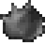 | 純色的石頭 Mono Stone｜モノクロストーン | 進化道具 | 進化為：角龍獸 | 5000 | — | 於バージョン4獲得優勝 |
| 鋼鐵的鑽頭 Steel drill｜鋼のドリル | 進化道具 | 進化為：鑽地獸 | 5000 | — | 於アニマルカップ獲得優勝 | |
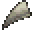 | 尖牙的化石 White Fang｜牙の化石 | 進化道具 | 進化為：巨龍獸 | 5000 | — | 於バージョン1獲得優勝 |
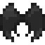 | 漆黑的翅膀 Black Wing｜黒い羽 | 進化道具 | 進化為：惡魔獸 | 5000 | — | 於ヒューマンカップ獲得優勝 |
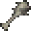 | 帶刺的棍棒 Spike Club｜トゲこん棒 | 進化道具 | 進化為：奧加獸 | 5000 | — | 於グラップルカップ獲得優勝 |
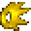 | 閃耀的鬃毛 Flamingmane｜輝くたてがみ | 進化道具 | 進化為：獅子獸 | 5000 | — | 於グレードA獲得優勝 |
| 潔白的翅膀 White Wing｜白い羽 | 進化道具 | 進化為：天使獸 | 5000 | — | 於ウィングカップ獲得優勝 | |
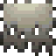 | 破爛的布巾 Torn tatter｜ボロ布 | 進化道具 | 進化為：猛鬼獸 | 5000 | — | 於尋寶店以任一方案機率取得；無加布獸加入2%；有加布獸加入4% |
| 電子指環 Electo ring｜ | 進化道具 | 進化成雷鳴獸⚠️！ | 5000 | — | 正常玩法攞唔到 ⚠️ | |
| 虹色的笛子 Rainbowhorn｜虹色の笛 | 進化道具 | 進化為：飛龍獸 | 5000 | 500 | 與怪蛙將軍獸用功績交換 | |
| 風向雞 Rooster｜風見鶏 | 進化道具 | 進化為：巨雞獸 | 5000 | — | 與企鵝獸的冰壺比賽獲得勝利（２％） | |
| 神聖的長角 Unihorn｜聖なる角 | 進化道具 | 進化為：獨角馬獸 | 5000 | — | 於サンダーウィンドカップ獲得優勝 | |
| 沉重的頭盔 Horn helmet｜重い兜 | 進化道具 | 進化為：比多獸 | 5000 | — | 於ビートルカップ獲得準優勝 | |
| 尖銳的剪刀 Scissor jaw｜ギザギザはさみ | 進化道具 | 進化為：古加獸 | 5000 | — | 於ビートルカップ獲得準優勝 | |
| 有機肥料 Fertilizer｜有機肥料 | 進化道具 | 進化為：鼻屎獸 | 5000 | — | 於ネイチャーカップ獲得優勝 | |
| 伊賀流秘笈 Koga laws｜イガ流の秘伝書 | 進化道具 | 進化為：伊賀獸 | 5000 | — | 於尋寶店以任一方案機率取得；無加布獸加入2%；有加布獸加入4% | |
| 供俸的醇酒 Waterbottle｜お供え酒 | 進化道具 | 進化為：海龍獸 | 5000 | 500 | 將龍眼湖的主人釣起 | |
| 北極星標誌 North Star｜北極星の印 | 進化道具 | 進化為：巨鯨獸 | 5000 | — | 於クールカップ獲得優勝 | |
| 鮮紅的貝殼 Red Shell｜赤い貝がら | 進化道具 | 進化為：貝殼獸 | 5000 | 500 | 與怪蛙將軍獸用功績交換 | |
| 堅硬的鱗片 Hard Scale｜硬いウロコ | 進化道具 | 進化為：西拉獸 | 5000 | 500 | 與怪蛙將軍獸用功績交換 | |
| 祕銀 Bluecrystal｜ミスリル | 進化道具 | 進化為：加魯魯獸 | 5000 | — | 於バージョン2獲得優勝 | |
| 寒冰水晶 Ice crystal｜氷水晶 | 進化道具 | 進化為：雪人獸 | 5000 | 500 | 與怪蛙將軍獸用功績交換 | |
| 生毛劑 Hair grower｜けはえ薬 | 進化道具 | 進化為：毛人獸 | 5000 | — | 與毛人獸進行交換 | |
| 太陽眼鏡 Sunglasses｜サングラス | 進化道具 | 進化為：亞伯獸 | 5000 | — | 於ダーティカップ獲得優勝 | |
| 金屬零件 Metal part｜メタルパーツ | 進化道具 | 進化為：機械暴龍獸 | 9999 | — | 於グレードS獲得優勝 | |
| 呼喚死亡的骸骨 Fatal Bone｜死を呼ぶ骨 | 進化道具 | 進化為：喪屍暴龍獸 | 9999 | — | 於グレードS獲得優勝 | |
| 電子零件 Cyber part｜サイバーパーツ | 進化道具 | 進化為：安杜路獸 | 9999 | — | 於メタリックカップ獲得優勝 | |
| 機械手臂 Mega Hand｜メガハンド | 進化道具 | 進化為：機械飛龍獸 | 9999 | — | 於グレードS獲得優勝 | |
| 銀色的球 Silver ball｜銀玉 | 進化道具 | 進化為：豆豆獸 | 9999 | — | 與鋼鐵豆豆獸的冰壺比賽獲得勝利（２％） | |
| 金屬盔甲 Metal armor｜メタルアーマー | 進化道具 | 進化為：鋼鐵豆豆獸 | 9999 | — | 與鋼鐵豆豆獸的冰壺比賽獲得勝利（２％） | |
| 電鋸 Chainsaw｜チェンソー | 進化道具 | 進化為：砲彈獸 | 9999 | — | 與鋼鐵豆豆獸的冰壺比賽獲得勝利（２％） | |
| 小小的長槍 Small spear｜小さな槍 | 進化道具 | 進化為：妖精獸 | 9999 | — | 與鋼鐵豆豆獸的冰壺比賽獲得勝利（２％） | |
| 愛情藥貼布 X Bandage｜愛のばんそうこう | 進化道具 | 進化為：熊仔獸 | 9999 | — | 玩具的都市 | |
| 光線槍 Ray Gun｜ビームガン | 進化道具 | 進化為：外星人獸 | 9999 | — | 裏次元 | |
| 黃金香蕉 Gold banana｜金のバナナ | 進化道具 | 進化為：悟空獸 | 9999 | — | 數碼大橋 | |
| 謎樣的蛋 Mysty Egg｜謎のタマゴ | 重要道具 | 進化為：蛋蛋獸 | 9999 | — | 秘密的海岸洞窟 | |
| 奇蹟的紅寶石 Red Ruby｜奇跡のルビー | 重要道具 | 進化為：鳳凰獸 | 9999 | — | 於バージョン0獲得優勝 | |
| 鑽石甲蟲 Beetlepearl｜ビートルダイヤ | 重要道具 | 進化為：力神比多獸 | 9999 | — | 於ビートルカップ獲得優勝 | |
| 珊瑚守護符 Coral charm｜サンゴのお守り | 重要道具 | 進化為：超海龍獸 | 9999 | — | 釣魚 | |
| 月之鏡 Moon mirror｜ | 重要道具 | 進化成獸人加魯魯獸！ | 9999 | — | 正常玩法攞唔到 ⚠️ | |
| 湖泊主人的笛子 Blue Flute｜湖のぬしの笛 | 重要道具 | 能夠在龍眼湖將海龍獸呼喚出來 | 9999 | — | 將龍眼湖的主人釣起 | |
| 破爛釣竿 old fishrod｜ぼろい釣ざお | 重要道具 | 能夠釣魚 | 100 | — | 垃圾山 | |
| 厲害釣竿 Amazing rod｜すごい釣ざお | 重要道具 | 能夠釣魚 | 3000 | 300 | 與怪蛙將軍獸用功績交換 | |
| 獅子獸族的石板 Leomonstone｜レオモン族の石板 | 重要道具 | 交給獅子獸 | 100 | — | 獅子獸祖先的洞窟 | |
| 洋樓的鑰匙 Mansion key｜館のカギ | 重要道具 | 將洋樓內的鎖打開 | 100 | — | 黑暗貴族洋樓 | |
| 齒輪 Gear｜はぐるま | 重要道具 | 交給鐵皮機器人 | 100 | — | 玩具的都市 | |
| 降雨草的果實 Rain Plant｜雨ふり草の実 | 重要道具 | 回復【MP 1000】點；事件道具 | 1000 | — | 起始之城 | |
| 滴血的肉塊 Steak｜血のしたたる肉 | 重要道具 | 飽足度+32．體重+0．回復【HP 1000】點．20%機率生病 | 1000 | — | 超載幽谷．墓地 | |
| 冰箱的鑰匙 Frig Key｜れいぞうこのカギ | 重要道具 | 將冰箱打開 | 100 | — | 黑暗貴族洋樓 | |
| AS 解碼器 AS Decoder｜ | 重要道具 | 可以解讀古代文字 | 500 | — | ⚠️ 未核實 | |
| 巨型機械手 Giga Hand｜ | 重要道具 | 進化成鋼甲飛龍獸！ | 0 | — | 正常玩法攞唔到 | |
| 高貴鬃毛 Noble Mane｜ | 重要道具 | 進化成冰獅獸！ | 0 | — | 正常玩法攞唔到 | |
| 金屬香蕉 Metalbanana｜ | 重要道具 | 進化成鋼鐵悟空獸！ | 0 | — | 日本比賽獎品；正常玩法攞唔到 |
📎 參考：SydMontague – Digimon World 資料表（Google Sheets） ｜ 巴哈姆特 – 數碼寶貝大冒險 攻略（振興流程、道具一覽、中文版譯名） ｜ Grindosaur – Items（道具）
重要道具（節錄）
- 厲害釣竿：怪蛙將軍獸 300 功績點換，釣海龍獸用。
- 湖泊主人的笛子：海龍獸俾，用嚟去甲蟲島。
- 獅子獸族的石板：喺獅子獸祖先洞窟攞，交俾獅子獸。
- 訓練手冊：妖精獸賣 50,000 點數。
- 進化道具：灰色利爪（→暴龍獸）、奇蹟的紅寶石（→鳳凰獸）、黃金香蕉（→悟空獸，悟空獸喺數碼大橋賣）等。競技場冠軍獎品見 城鎮／競技場。
- 巨型機械手、高貴鬃毛、金屬香蕉：遊戲資料入面有，但正常玩法攞唔到（金屬香蕉係日本比賽獎品）。
📎 參考：HeroesAndCons – Recruitment Guide（GameFAQs 招募指南） ｜ SydMontague & Ginoshie – Digimon World 機制文件（Google Docs） ｜ Grindosaur – Items（道具）
卡片收集
喺怪蛙濕地（巨音鄉）嘅 怪蛙將軍獸 可以用卡片換功績點，再換道具。大商店有 3 位或以上店長就有卡片販賣機。⚠️ 每張卡嘅取得途徑未逐張核實。
功績點兌換
| 道具 | 說明 | 所需功績點 |
|---|---|---|
| 超回復磁片 sup.recovery | 回復【HP 9999】點 | 20 |
| 超再生磁片 Sup.restore | 回復【HP 9999】點．治療瀕死狀態 | 100 |
| 攻擊晶片 Off. Chip | 增加 50 點攻擊 | 800 |
| 防禦晶片 Def. Chip | 增加 50 點防禦 | 800 |
| 聰明晶片 Brain Chip | 增加 50 點智力 | 800 |
| 敏捷晶片 Quick Chip | 增加 50 點敏捷 | 800 |
| ＨＰ晶片 HP Chip | 增加 500 點HP | 800 |
| ＭＰ晶片 MP Chip | 增加 500 點MP | 800 |
| 虹色的笛子 Rainbowhorn | 進化為：飛龍獸 | 500 |
| 供俸的醇酒 Waterbottle | 進化為：海龍獸 | 500 |
| 鮮紅的貝殼 Red Shell | 進化為：貝殼獸 | 500 |
| 堅硬的鱗片 Hard Scale | 進化為：西拉獸 | 500 |
| 寒冰水晶 Ice crystal | 進化為：雪人獸 | 500 |
| 厲害釣竿 Amazing rod | 能夠釣魚 | 300 |
卡片一覽
類比少年
Analog Boy
免費
功績點 0｜0 點數
鳳凰獸
Phoenixmon
極稀有
功績點 100｜2500 點數
力神比多獸
H-Kabuterimon
極稀有
功績點 100｜2500 點數
超海龍獸
MegaSeadramon
極稀有
功績點 100｜2500 點數
怪蛙將軍獸
ShogunGekomon
極稀有
功績點 100｜2500 點數
吸血魔獸
Myotismon
極稀有
功績點 100｜2500 點數
機械暴龍獸
MetalGreymon
稀有
功績點 30｜750 點數
豆豆獸
Mamemon
稀有
功績點 30｜750 點數
熊仔獸
Monzaemon
稀有
功績點 30｜750 點數
喪屍暴龍獸
SkullGreymon
稀有
功績點 30｜750 點數
鋼鐵豆豆獸
MetalMamemon
稀有
功績點 30｜750 點數
外星人獸
Vademon
稀有
功績點 30｜750 點數
安杜路獸
Andromon
稀有
功績點 30｜750 點數
砲彈獸
Giromon
稀有
功績點 30｜750 點數
悟空獸
Etemon
稀有
功績點 30｜750 點數
機械飛龍獸
Megadramon
稀有
功績點 30｜750 點數
妖精獸
Piximon
稀有
功績點 30｜750 點數
蛋蛋獸
Digitamamon
稀有
功績點 30｜750 點數
怪蛙獸
Gekomon
稀有
功績點 30｜750 點數
惡霸熊仔獸
Warumonzaemon
稀有
功績點 30｜750 點數
公公獸
Jijimon
稀有
功績點 30｜750 點數
大便獸王
King of Sukamon
稀有
功績點 30｜750 點數
祖利獸
Cherrymon
稀有
功績點 30｜750 點數
守衛獸
Guardromon
稀有
功績點 30｜750 點數
齒輪獸
Hagurumon
稀有
功績點 30｜750 點數
腕龍獸
Brachiomon
稀有
功績點 30｜750 點數
暴龍獸
Greymon
少見
功績點 10｜250 點數
惡魔獸
Devimon
少見
功績點 10｜250 點數
飛龍獸
Airdramon
少見
功績點 10｜250 點數
巨龍獸
Tyrannomon
少見
功績點 10｜250 點數
火焰獸
Meramon
少見
功績點 10｜250 點數
海龍獸
Seadramon
少見
功績點 10｜250 點數
比多獸
Kabuterimon
少見
功績點 10｜250 點數
天使獸
Angemon
少見
功績點 10｜250 點數
巴多拉獸
Birdramon
少見
功績點 10｜250 點數
加魯魯獸
Garurumon
少見
功績點 10｜250 點數
雪人獸
Frigimon
少見
功績點 10｜250 點數
巨鯨獸
Whamon
少見
功績點 10｜250 點數
獨角馬獸
Unimon
少見
功績點 10｜250 點數
奧加獸
Ogremon
少見
功績點 10｜250 點數
貝殼獸
Shellmon
少見
功績點 10｜250 點數
人馬獸
Centarumon
少見
功績點 10｜250 點數
猛鬼獸
Bakemon
少見
功績點 10｜250 點數
鑽地獸
Drimogemon
少見
功績點 10｜250 點數
角龍獸
Monochromon
少見
功績點 10｜250 點數
獅子獸
Leomon
少見
功績點 10｜250 點數
西拉獸
Coelamon
少見
功績點 10｜250 點數
巨雞獸
Kokatorimon
少見
功績點 10｜250 點數
古加獸
Kuwagamon
少見
功績點 10｜250 點數
毛人獸
Mojyamon
少見
功績點 10｜250 點數
伊賀獸
Ninjamon
少見
功績點 10｜250 點數
企鵝獸
Penguinmon
普通
功績點 5｜50 點數
蝌蚪獸
Otamamon
—
功績點 5｜50 點數
甲蟲獸
Tentomon
普通
功績點 5｜50 點數
蜻蜓獸
Yanmamon
普通
功績點 5｜50 點數
礦石獸
Gotsumon
普通
功績點 5｜50 點數
黑暗蜥蜴獸
Darkrizamon
普通
功績點 5｜50 點數
玩具亞古獸
ToyAgumon
普通
功績點 5｜50 點數
小火焰獸
DemiMeramon
普通
功績點 5｜50 點數
坦克獸
Tankmon
普通
功績點 5｜50 點數
野人獸
Goburimon
普通
功績點 5｜50 點數
機械邪龍獸
Machinedramon
免費
功績點 0｜0 點數